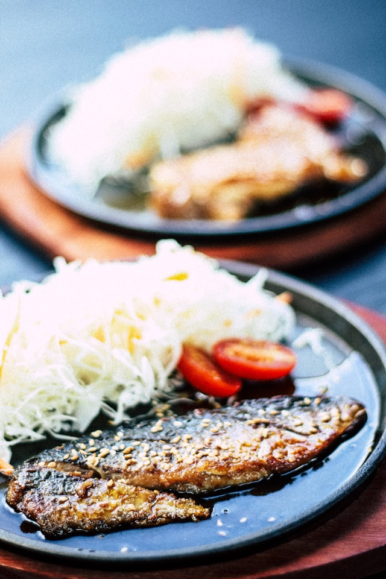
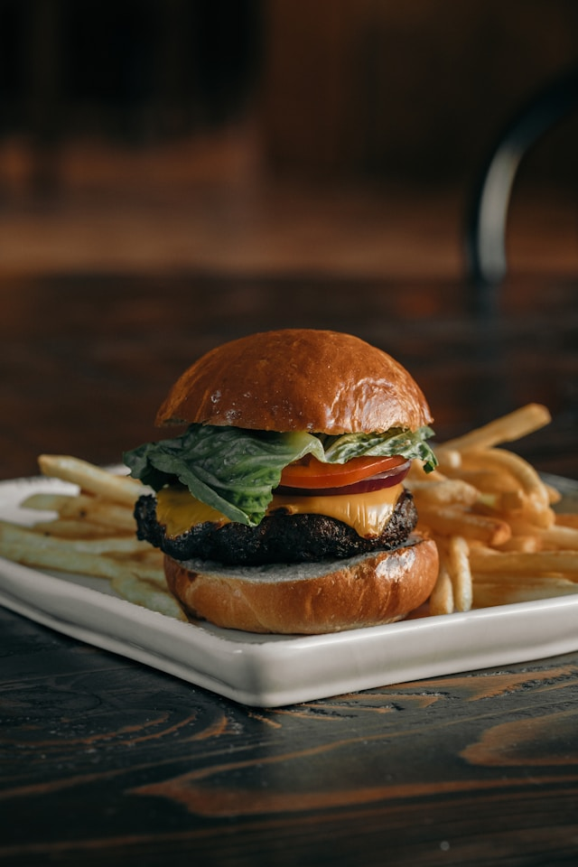
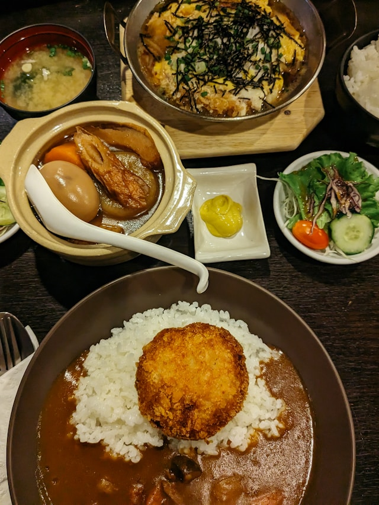

Welcome to Taniti Island
Home
Food
Lodging
Activities
Transportation
Contact & FAQS
Taniti currently has 10 restaurants: five serve mostly local fish and rice, three serve American-style meals, and two serve Pan-Asian cuisine.

Local Cuisine

American Cuisine

Pan-Asian Cuisine